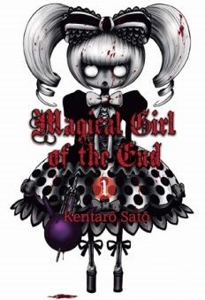

Magical Girl of the End

{kind=link}
© 2012 Sato Kentaro (mangaka), Akita Shoten
- Titre original : Mahou Shoujo of the End / 魔法少女・オブ・ジ・エンド
-
Origine :
 Japon -
2012
Japon -
2012
- Année VF : 2014
- Type : Shonen
- Genres : Fantastique - Horreur - Mature - Mystère - Psychologique - Tragique
- Thème : Magical girl - WTF
- Auteur : Sato Kentaro
- Éditeur VO : Akita Shoten
- Éditeur VF : Akata
- Nb volume VO : 16 (Terminé)
- Nb volume VF : 16 (Terminé)
- Âge conseillé : 12 ans et +
- Pour public averti : Oui (violence)
Synopsis
Kii Kogami
est un lycéen que tout ennuie... même ses potes ! Débonnaire, il prend malgré tout la vie comme elle vient, même s'il se dit qu'elle serait peut-être un peu plus excitante s'il arrivait à sortir avec une nana sexy... Mais ça, il ne le saura jamais ! Car son quotidien va basculer dans l'horreur quand une drôle de fillette armée d'une « adorable » baguette magique, va défoncer la tête de son prof de sport ! En moins de temps qu'il n'en faut pour le dire, le lycée tout entier va être massacré... et les rares survivants vont devoir fuir pour survivre ! Mais hélas, c'est tout le Japon qui semble être envahi par ces magical-girls ultra-violentes et sadiques ! D'où viennent-elles ? Quelle est la véritable raison de leur apparition et... Non, tout ça, pour le moment,
Kogami
s'en fout ! Pour l'instant, il lui faut juste survivre ! Mais comment y parvenir quand les « zombies » qui vous poursuivent ont des super pouvoirs ?!